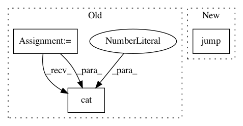

306040ac5627d245582ef1f1b5410d186b2f33b0,benchmark/kernel/graclus.py,Graclus,forward,#Graclus#Any#,25
Before Change
data = Batch(x=x, edge_index=edge_index, batch=batch)
data = max_pool(cluster, data)
x, edge_index, batch = data.x, data.edge_index, data.batch
x = torch.cat(xs, dim=1)
x = F.relu(self.lin1(x))
x = F.dropout(x, p=0.5, training=self.training)
x = self.lin2(x)
return F.log_softmax(x, dim=-1)
After Change
data = Batch(x=x, edge_index=edge_index, batch=batch)
data = max_pool(cluster, data)
x, edge_index, batch = data.x, data.edge_index, data.batch
x = self.jump(xs)
x = F.relu(self.lin1(x))
x = F.dropout(x, p=0.5, training=self.training)
x = self.lin2(x)
return F.log_softmax(x, dim=-1)
In pattern: SUPERPATTERN
Frequency: 3
Non-data size: 3
Instances
Project Name: rusty1s/pytorch_geometric
Commit Name: 306040ac5627d245582ef1f1b5410d186b2f33b0
Time: 2019-06-01
Author: matthias.fey@tu-dortmund.de
File Name: benchmark/kernel/graclus.py
Class Name: Graclus
Method Name: forward
Project Name: rusty1s/pytorch_geometric
Commit Name: 306040ac5627d245582ef1f1b5410d186b2f33b0
Time: 2019-06-01
Author: matthias.fey@tu-dortmund.de
File Name: benchmark/kernel/diff_pool.py
Class Name: DiffPool
Method Name: forward
Project Name: rusty1s/pytorch_geometric
Commit Name: 306040ac5627d245582ef1f1b5410d186b2f33b0
Time: 2019-06-01
Author: matthias.fey@tu-dortmund.de
File Name: benchmark/kernel/top_k.py
Class Name: TopK
Method Name: forward